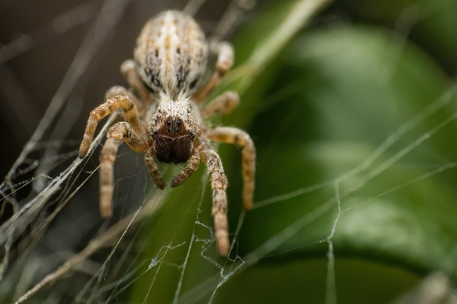

सामूहिक मकड़ीSocial Velvet Spider
Stegodyphus sarasinorum · Eresidae · SPD-0013

- Scientific name
- Stegodyphus sarasinorum Karsch, 1892
- Family
- Eresidae
- Hindi
- सामूहिक मकड़ी
- Status here
- native
- IUCN
- not evaluated
When to look कब देखें
Present all year.
सामूहिक मकड़ी / Social Velvet Spider
Stegodyphus sarasinorum Karsch, 1892 — Eresidae
सामूहिक मकड़ी (सोशल वेलवेट स्पाइडर) — पूर्वी उत्तर प्रदेश के बबूल (Babool) और कंटीली झाड़ियों में पाई जाने वाली एक अत्यंत दुर्लभ और सामाजिक मकड़ी है। दुनिया भर में मकड़ियों की लगभग 50,000 प्रजातियों में से केवल कुछ ही प्रजातियाँ सामाजिक व्यवहार दर्शाती हैं, जिनमें से यह एक है। ये मकड़ियाँ अकेले रहने के बजाय दर्जनों से लेकर सैकड़ों की संख्या में एक साथ मिलकर एक बड़े सामूहिक जाले (communal, irregular web) में रहती हैं। ये सभी मकड़ियाँ मिलकर शिकार करती हैं, जाले की मरम्मत करती हैं, और मादाएँ मिलकर बच्चों की परवरिश (cooperative breeding) करती हैं। इनका जाला आधा मीटर (up to 0.5 meters) तक चौड़ा हो सकता है, जो अक्सर बबूल की टहनियों पर धूल से सना हुआ दिखाई देता है। इनका शरीर मखमली, धूसर-भूरे रंग (velvety grey-brown body) का होता है।
Quick Identification त्वरित पहचान
| Feature | Description |
|---|---|
| Social Structure | True social spider; lives in colonies of 50 to 500+ individuals inside a shared web |
| Colouration | Velvety, dull grey-brown to charcoal body, covered with dense, short hair |
| Web Type | Large, dense, irregular sheets of silk (sheet-web) wrapped around branches, incorporating dry leaves and insect prey remains |
| Size | Small, robust spider; female body length 8–10 mm, male slightly smaller |
| Legs | Short, thick, and hairy, adapted for running inside the dense web tunnels |
Field tip: Look in Babool (Vachellia nilotica) or Acacia hedges along dry village pathways. Scan the branches for large, dusty, greyish, nest-like silk sheets (20–50 cm across) containing dry leaves. If you look closely, you will see multiple small, velvety grey-brown spiders crawling together or dragging a captured insect into the tunnels. The female is shown in the field tip.
Morphology आकारिकी
Biometrics (typical measurements of adults in the northern Indian plains showing sexual size dimorphism):
| Measurement | Female | Male |
|---|---|---|
| Body length | 8–10 mm | 6–8 mm |
| Leg span | 18–22 mm | 15–18 mm |
| Carapace length | 3.5–4.5 mm | 3.0–3.8 mm |
| Average weight | 20–40 mg | 12–22 mg |
Adult Spider:
- Cephalothorax: High, rounded at the front, dark brown to black, covered with dense greyish-white and black velvety hairs. The eyes are small, with the front middle pair being larger.
- Abdomen: Oval, thick, velvety, dull greyish-brown, with a series of pairs of dark spots or a faint pattern of lighter lines running down the middle.
- Legs: Short, stout, covered with thick velvety hair, dark brown with lighter rings.
Behaviour & Ecology व्यवहार और पारिस्थितिकी
- Eusociality and Cooperative Hunting: A true social species. When an insect (like a butterfly or grasshopper) lands on the communal web, several spiders run out of their retreat tunnels together, bite the prey to paralyze it, and pull it back to the nest to share it. This cooperation allows them to capture prey up to 10 times their individual size.
- Cooperative Care: Multiple females lay egg cocoons within the same nest. Non-reproductive females and young adults cooperate to guard the egg sacs, maintain the nest, and regurgitate digested food to feed the newly hatched spiderlings.
- Communal Nest Architecture: The nest has two parts: a dense, paper-like retreat tunnel system containing dry leaves (where they hide during the day and care for eggs), and an outer, sticky silk sheet used to capture insects.
Life Cycle / Phenology जीवन चक्र
- Reproduction: Peak breeding occurs during the summer and early monsoon (May to July).
- Mating: Takes place inside the communal retreat tunnels.
- Maternal Sacrifice (Matriphagy): After laying eggs, the mother's body begins to break down. When the eggs hatch, the mother feeds the young by regurgitating digested food. Eventually, the spiderlings climb onto the mother and consume her body (matriphagy) before she dies, which boosts the growth and survival of the colony.
Host Plants or Prey आहार
Primary insect prey captured in communal webs:
- Insects: Grasshoppers, butterflies (such as the Common Grass Yellow Eurema hecabe), beetles, and flies.
- Pests: Agricultural pests that fly into hedges from adjacent fields, like adult moths and leafhoppers.
Predators / Natural Enemies शत्रु
- Parasitic Wasps: Ichneumonid wasps are major enemies, invading the nests to lay eggs inside the spider egg sacs.
- Predatory Bugs: Reduviid bugs (assassin bugs) sit on the margins of the communal web, spearing and sucking the fluids from individual spiders.
- Birds: Insectivorous birds (like the Yellow-eyed Babbler) tear open the silk sheets to feed on the spiders hiding inside.
Agricultural / Human Relevance कृषि प्रासंगिकता
Natural insect control barriers. Social Velvet Spiders build large, persistent webs in farm hedges (such as Babool borders). These webs act as natural insect nets, capturing high numbers of flying pests before they can enter agricultural fields.
Venom safety: They possess minor venom used to paralyze insect prey. They are completely harmless to humans and are not aggressive.
Expected Locally स्थानीय रूप से अपेक्षित
Not a field record. Written from published accounts for eastern Uttar Pradesh. No confirmed local sighting yet — if you have seen it, that is what the atlas needs.
अभी तक स्थानीय पुष्टि नहीं। यह विवरण प्रकाशित स्रोतों से है, किसी अवलोकन से नहीं।
A common resident throughout the dry, scrubby margins of the Basti district. Colonies are regularly recorded in Babool (Vachellia nilotica) hedges bordering farms in the Harraiya and Vikramjot blocks. Their dusty communal webs are easily spotted along dirt paths during dry summer months.
Distribution वितरण
Global range: Widespread across the Indian subcontinent (India, Pakistan, Nepal, Sri Lanka).
In India: Found throughout the dry and semi-arid plains of northern, central, and western India.
In Uttar Pradesh: Distributed across all plains and dry scrub districts.
In Basti district / eastern UP: Common in blocks with dry wastelands and scrub borders.
Research Questions शोध प्रश्न
Anyone can investigate these | कोई भी इन प्रश्नों की जाँच कर सकता है
- What is the average number of spiders residing in a single communal web in your village? — Count emerging spiders when a prey insect is gently placed on the web.
- Do social spiders prefer building their communal nests on thorny Babool branches over smooth Mango branches? / क्या सामूहिक मकड़ी आम की चिकनी टहनियों की तुलना में कंटीले बबूल की शाखाओं पर घोंसला बनाना अधिक पसंद करती है? — Record nest locations.
- What is the size range of prey insects captured in a 30 cm wide communal web? — Document trapped prey.
- How many spiders participate in capturing a large grasshopper versus a small fly? — Record cooperative hunting numbers.
- Does the population count of social spider colonies drop in areas with high human disturbance along roadsides? / क्या सड़क के किनारे अत्यधिक मानवीय हस्तक्षेप वाले क्षेत्रों में सामूहिक मकड़ी के घोंसलों की संख्या कम हो जाती है? — Compare colony counts in quiet fields versus busy roads.
Similar Species मिलती-जुलती प्रजातियाँ
| Species | How to tell apart | comparison |
|---|---|---|
| Spiny Orb-weaver (Gasteracantha kuhli) | Solitary spider; hard, flat body with 6 sharp spines; builds perfect, small vertical orb webs | कंटकदार मकड़ी — अकेली रहने वाली, शरीर पर कांटे |
| Yellow Sac Spider (Cheiracanthium melanostomum) | Solitary; pale yellow-green with black-tipped jaws; hunts by wandering at night | पीली थैली मकड़ी — पीला-हरा रंग, एकाकी जीवन |
| Kidneys Garden Spider related | (e.g. Araneus species which build vertical webs and live alone) | बगीचे की गोल मकड़ी — गोल शरीर, अकेले रहना |
Field rule: Dull grey-brown, velvety spider living with dozens of others inside a large, dense, shared silk sheet wrapped around thorny branches is the Social Velvet Spider.
Taxonomy & Classification वर्गीकरण
Original description. Ferdinand Karsch described the Social Velvet Spider as Stegodyphus sarasinorum in 1892 in his Berliner Entomologische Zeitschrift (Vol. 36, p. 275). The type locality was Sri Lanka. The genus name Stegodyphus is derived from the Greek stegos (roof/cover) and hyphē (web), referencing the covered retreat tunnels. The specific name sarasinorum honors the Swiss naturalists Paul and Fritz Sarasin.
Subspecies. Monotypic — no subspecies are currently recognised.
Family and order placement. Placed in the order Araneae, infraorder Araneomorphae, family Eresidae (velvet spiders), subfamily Eresinae.
Phylogenetic notes. The genus Stegodyphus is one of only three spider lineages globally that have evolved true sociality, serving as a key model for studying the evolution of cooperative behavior in animals.
IUCN status rationale. Not evaluated (NE) by the IUCN Red List. It is common and secure throughout its range in South Asia.
Photo Gallery फोटो गैलरी
References संदर्भ
- Karsch, F. (1892). Berliner Entomologische Zeitschrift. Berlin, Vol. 36, p. 275. [original description]
- Tikader, B. K. (1987). Handbook: Indian Spiders. Zoological Survey of India, Calcutta.
- Sebastian, P. A. & Peter, K. V. (2009). Spiders of India. Universities Press, Hyderabad.
- Lubin, Y. & Bilde, T. (2007). The Evolution of Sociality in Spiders. Advances in the Study of Behavior, Academic Press.
- World Spider Catalog (2024). Stegodyphus sarasinorum species page.
- GBIF Occurrence Data — Stegodyphus sarasinorum, India (2010–2025).
Source file: species/fauna/spiders/social_velvet_spider.md